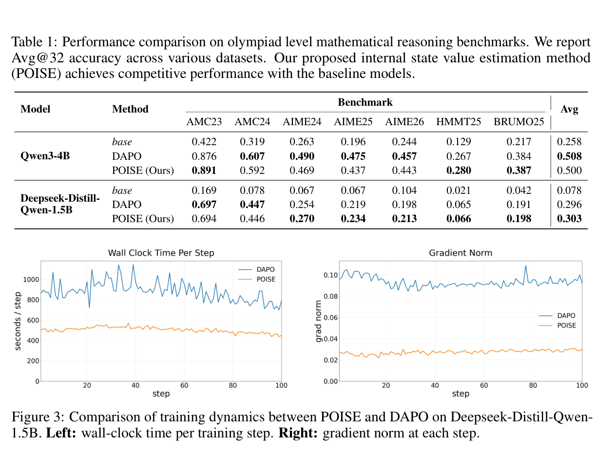

No extra LLM critic
The value estimator is lightweight, avoiding the memory and optimization cost of a second model-scale network.
POISE
Reinforcement Learning with Value Estimation from Actor’s Internal States
*Equal contribution. †Corresponding author.
POISE replaces expensive RLVR baselines with a lightweight value estimator trained from the actor's own hidden states and entropy statistics.

Core Idea
RLVR methods need a baseline to reduce variance in outcome-reward policy gradients. PPO trains a policy-scale critic. GRPO and DAPO estimate a group mean from multiple same-prompt responses. POISE asks whether the actor's existing internal computation can provide the baseline directly.
A language model already exposes the signals needed to predict whether its answer will verify.
POISE trains a small online probe on prompt hidden states, trajectory hidden states, and token entropy statistics already produced during generation.The value estimator is lightweight, avoiding the memory and optimization cost of a second model-scale network.
Instead of spending rollouts to find zero-advantage prompt groups, POISE can cover more prompts for the same budget.
A recent-example buffer keeps the probe calibrated as the policy changes during reinforcement learning.
Method
A baseline conditioned on the same generated trajectory can bias the policy gradient. POISE avoids this by estimating rollout 1's baseline from rollout 2's internal states, and rollout 2's baseline from rollout 1's internal states.
Two independent responses are generated from the old policy and scored by the verifier.
Hidden-state pools and entropy statistics are collected from each response.
Each rollout subtracts a value predicted from the other rollout's features.
The estimator is trained on current and recent rollouts so it tracks policy drift.
Results
POISE is not framed as uniformly more accurate than DAPO. The main result is that it reaches similar benchmark performance while replacing large group-relative sampling with a cheaper internal-state baseline.
Qwen3-4B: DAPO is slightly higher on the average, while POISE wins on AMC23, HMMT25, and BRUMO25.
DeepSeek-R1-Distill-Qwen-1.5B: POISE is slightly higher on the reported benchmark average.
Qwen3-4B wall-clock time on two B200 GPUs in the reported setup.
DeepSeek-R1-Distill-Qwen-1.5B reaches the same performance level faster on one B200 GPU.

Estimator
The paper compares the internal-state probe against a separately trained policy-scale critic. The probe predicts empirical verifier reward with strong correlation while being much cheaper to train and run.

Implementation
The included repository packages POISE as a configurable training recipe. The launch script accepts environment variables and Hydra overrides.
cd poise
CUDA_VISIBLE_DEVICES=0,1 \
MODEL_PATH=Qwen/Qwen3-4B \
TRAIN_DATA_DIR=data/DAPO-Math-17k-Processed_Splits \
OUTPUT_DIR=outputs/poise \
bash recipe/poise/run_poise.sh trainer.total_epochs=10Citation
Citation metadata can be updated when the final publication record is available.
@misc{choi2026poise,
title = {Your Language Model is Its Own Critic: Reinforcement Learning with Value Estimation from Actor's Internal States},
author = {Yunho Choi and Jongwon Lim and Woojin Ahn and Minjae Oh and Jeonghoon Shim and Yohan Jo},
year = {2026},
note = {Manuscript}
}